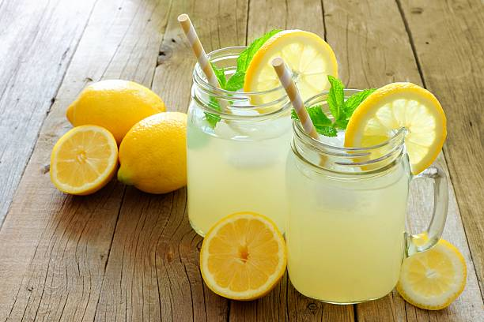

Lemonade

Description
Lemonade is a beverage consisting of lemon juice, water, and a sweetener.
There are three attrivuted to lemonade: sournees, sweetness, and strength of
lemon flavor. Lemonade is good for removing toxins from the body but it is not
really recommended to drink sugary lemonade as it could lead to weight gain and poor
dental health. Do not choose lemonade as a regular drink; there are better choices to
pick from!
Ingredients
- 1 3/4 cups white sugar
- 1 cup water
- 9 lemons
- 7 cups cold water
- ice if needed
Steps
- Comvine sugar and 1 cup of water in a saucepan. Stir until the mixutre is boiled.
Wait for the mixture to cool.
- Meanwhile, cut lemon in health and squeeze it into liquid measuring cup. Add pulp to
juice but throw away the seeds. Continue until you have 1 1/2 cups of fresh juice.
- Pour 7 cups cold water into pitcher.
- Stir in lemon juice and add simple syrup to taste. Add ice.